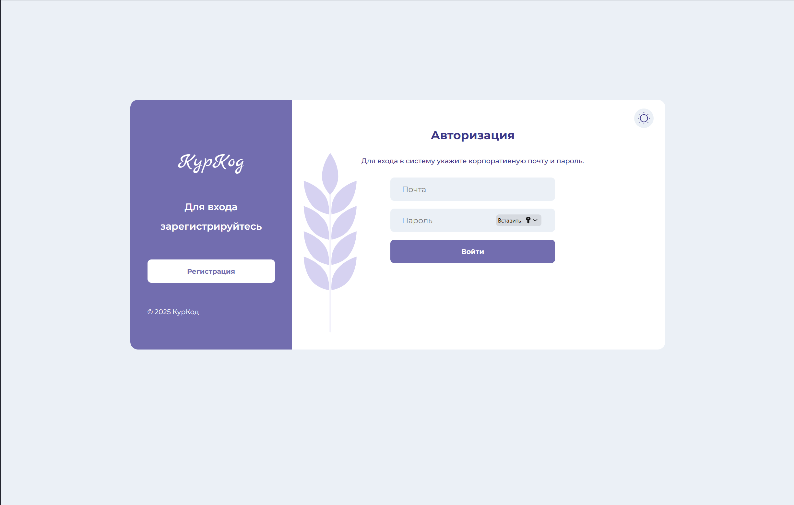
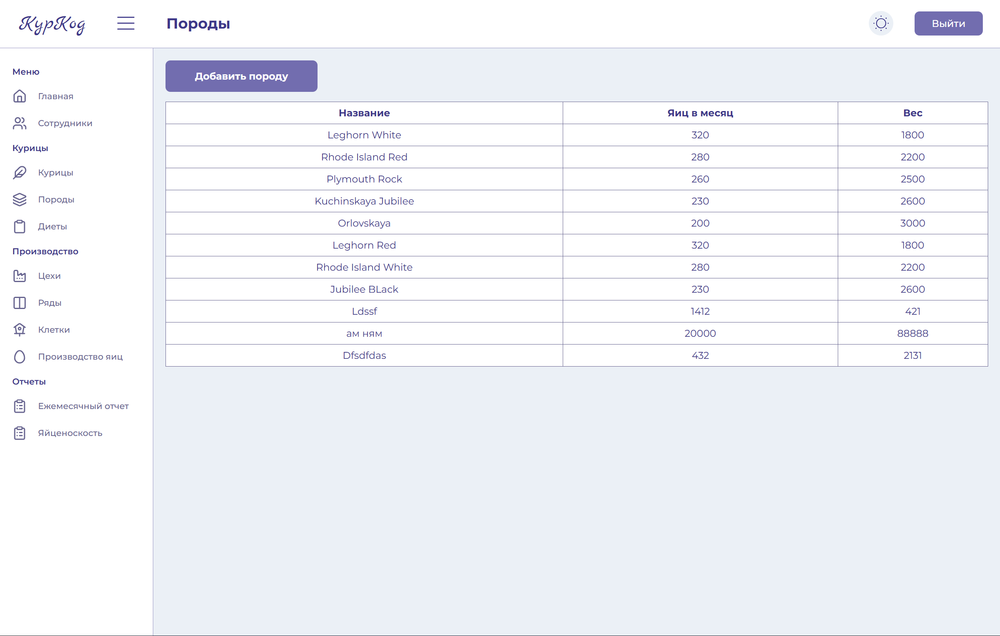
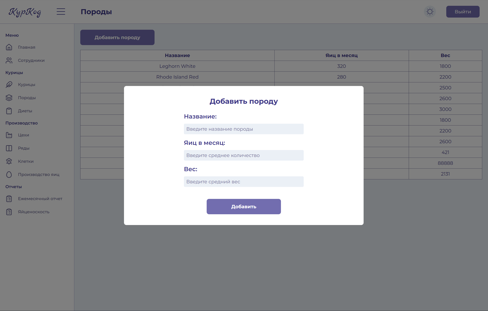
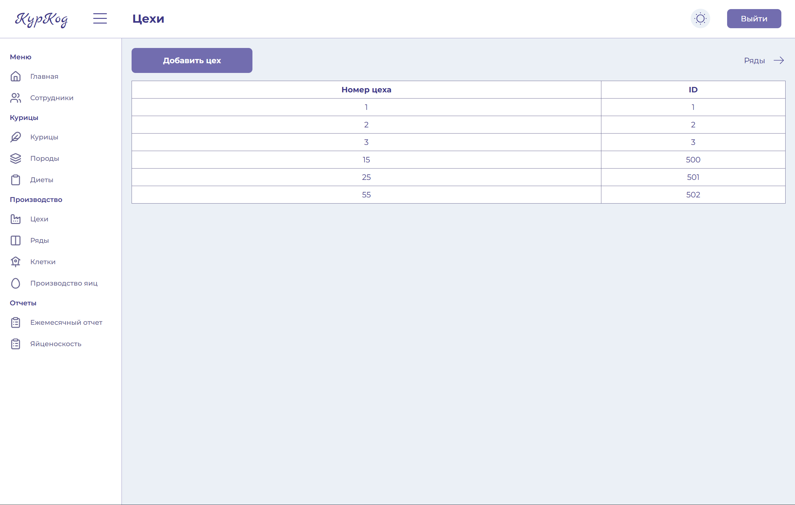

Лабораторная работа 4
Назначение
Клиентское приложение реализует веб-интерфейс для системы управления птицефабрикой. Через него администраторы и сотрудники могут просматривать статистику по птице, персоналу и инфраструктуре (цехи, ряды, клетки), работать с отчетами по производству яиц и управлять доступом к системе.
Интерфейс построен как одностраничное приложение (SPA) и взаимодействует с REST API бэкенда.
Используемые технологии
- Vue.js - основной фреймворк
- Vue Router - навигация между страницами
- Pinia - управление состоянием (UI-настройки)
- Axios - HTTP-клиент
Установка и запуск
Установка
npm install
Запуск
npm run dev
Общая архитектура
Точка входа - main.js:
- создаётся приложение createApp(App)
- подключаются Pinia и Vue Router
- глобально регистрируется компонент Icon
- импортируется общий файл стилей styles/main.scss
Корневой компонент App.vue отвечает за общий layout:
-
для обычных страниц отображаются:
-
Header (верхняя панель навигации и управления)
- Sidebar (боковое меню разделов)
- компонент-обёртка Content, в котором рендерится
.
Маршрутизация
Файл router/index.js описывает основные маршруты приложения:
/- главная панель (дашборд статистики)/employees- список сотрудников/employee/:id- детальная карточка сотрудника/chickens- список кур/chickens/:id- подробная информация о конкретной курице/breeds- породы/workshops- цехи/rows- ряды/cages- клетки/diets- рационы/egg-production- данные по производству яиц/report-factory-monthly- ежемесячный отчёт директора по фабрике/report-breed-egg-difference- отчёт по яйценоскости пород/account- личный кабинет/sign- авторизация/register- регистрация.
Работа с API
Все запросы выполняются через единый экземпляр axios (api/http.js):
- базовый URL берётся из
import.meta.env.VITE_API_URL - при старте приложения токен подхватывается из localStorage
Обновление токена
Реализована схема с refresh-токеном:
- Если сервер вернул 401 и запрос ещё не помечен как повторный - проверяется наличие refreshToken в localStorage
- Если refresh-токен есть и сейчас никто не обновляет токен: выполняется запрос
/auth/refresh/token?token=<refreshToken> - новые токены сохраняются через setTokens
При ошибке обновления:
- токены очищаются (clearTokens)
- при необходимости выполняется редирект на
/sign
Основные страницы и интерфейс
Главная страница
Компонент HomePage.vue:
- получает общую статистику через useFarmStatistics():
- общее число кур, сотрудников, пород, цехов, рядов, клеток
- среднюю яйценоскость на одну курицу
- общее количество яиц за текущий месяц
- средний возраст птицы
Детальная информация о курице
ChickenPage.vue:
- получает
idкурицы из параметров маршрута - загружает данные через
getChicken(id)
Управление породами кур
Страница Породы отвечает за работу со справочником пород:
- данные подгружаются через
useBreeds(), который возвращает список пород - сами данные отображаются в таблице BreedsTable с колонками:
- название породы
- количество яиц в месяц
- вес
Управление сотрудниками
Страница Сотрудники показывает список работников птицефабрики:
- используется
useWorkers(), который загружает массив сотрудников и признак загрузки
Управление цехами
Страница Цехи предназначена для работы со структурой фабрики на уровне производственных помещений:
- данные загружаются через
useWorkshops(), который возвращает список цехов
Демонстрация работы

Фотография 1 - страница регистрации

Фотографи 2 - страница всех пород

Фотография 3 - добавление породы

Фотография 4 - цеха